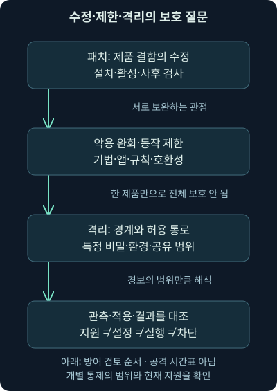
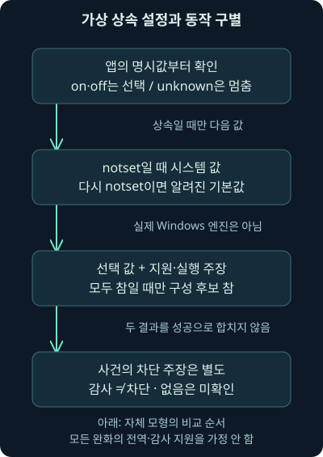
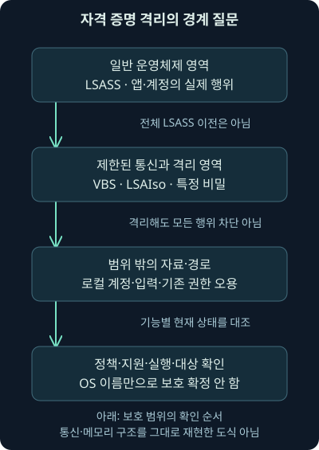

악용 완화와 격리: 설정·동작·보호 범위
셋째 날 8강. 위험 동작 제한·정책 상속·감사와 차단·자격 증명 격리를 구별하고 현재 지원과 관측 한계를 확인합니다.
1. 패치를 기다리는 동안에는 무엇을 할 수 있을까요?
앞 강의에서 자산·약점·조치·활성·재검증을 연결했습니다. 그런데 문서 열람기의 결함이 알려졌어도 모든 업무 장비에 즉시 업데이트를 적용하기 어려울 수 있죠. 아직 모르는 약점도 있습니다. 이때 위험한 동작을 어렵게 만들고, 민감한 자료와 실행 환경을 분리하는 방어가 패치를 보완합니다.
셋째 날 8강은 악용 완화, 파일·동작·연결 보호의 차이, 정책 상속과 감사·차단, 자격 증명 격리와 과거 애플리케이션 격리 기능의 현재 상태를 다룹니다. 모든 보호 제품의 설치 설명서가 아니라, 어떤 조건이 어떤 행위와 자료를 보호하고 어떤 근거가 필요한지 배우는 회차입니다.
자체 가상 설정 비교는 실제 실행하지만, 운영체제 보호 설정 조회·변경, 익스플로잇 실행, 메모리 열람이나 격리 환경 설치는 수행하지 않았습니다. 아래 명령 예시도 실제 장비 출력으로 꾸미지 않습니다.
2. 고장 수리와 안전장치, 작업 공간 분리는 역할이 다릅니다
기계의 고장 난 부품을 교체하는 것은 패치에 비유할 수 있습니다. 위험한 동작을 감지해 멈추는 안전장치는 악용 완화에, 위험한 작업을 별도 작업실에 두는 것은 격리에 가깝습니다. 어느 하나가 다른 역할을 자동으로 대신하지는 않죠.
악용 완화는 특정 결함이 공격으로 이어지는 조건이나 동작을 제한하는 보호입니다. 격리는 실행 코드나 민감한 자료를 다른 영역과 분리하고 허용한 통로만 연결하는 방식입니다. 제한·격리된 범위 밖의 기능과 자료는 별도 검토가 필요합니다.
컴퓨터는 물리적인 벽과 달리 설정·프로세스·권한·공유 기능에 따라 경계가 달라집니다. 파일 반입, 클립보드, 인증, 네트워크, 저장·반출 같은 통로가 남을 수 있어요. 따라서 “격리했다”는 제품 이름보다 경계 안팎과 연결 통로를 그려보는 것이 먼저입니다.

그림에서 마지막의 관측·검증 상자를 함께 읽어주세요. 기능이 제공된다는 설명, 정책을 배포했다는 보고, 실제 프로세스와 자료에 적용된 결과는 따로 확인해야 합니다.
3. 메모리의 자료를 코드처럼 실행하지 못하게 한다는 뜻
프로그램은 명령을 실행하고 문서·입력 같은 자료를 메모리에 보관합니다. 결함 때문에 공격자가 원하는 흐름으로 실행이 바뀔 수 있습니다. 여기서 메모리 페이지는 운영체제가 보호 속성을 관리하는 메모리 구간 단위입니다. 앞선 권한 강의의 구간 개념을 떠올려보세요.
DEP, Data Execution Prevention은 자료 전용 메모리 구간에서 코드가 실행되는 것을 제한하는 보호입니다. ASLR, Address Space Layout Randomization은 메모리 배치를 예측하기 어렵게 만드는 보호입니다. 하나는 실행 속성, 다른 하나는 위치 예측이라는 서로 다른 조건을 겨냥합니다. 파일의 악성 여부를 완전히 판정하는 이름은 아닙니다.
CFG, Control Flow Guard는 일부 간접 호출에서 허용된 호출 흐름을 검사하는 보호입니다. 이처럼 악용 완화는 동일한 검사를 여러 번 하는 장치만을 뜻하지 않습니다. 보호 대상·지원 아키텍처·프로그램의 구성과 호환성에 따라 의미가 달라집니다.
2026-11-07 Microsoft의 완화 기법별 설명을 확인했습니다. DEP·ASLR·CFG를 모두 같은 방식의 전역 감사·차단 스위치로 설명하지 않습니다. 예를 들어 문서의 DEP·CFG 항목에는 감사 모드가 없고, DEP의 변경 가능 범위에는 아키텍처 차이도 있습니다. 아래 자체 모형은 이 기법들의 실제 메모리 동작을 재현하지 않습니다.
4. 문서를 열었고 보호 경보도 있다면 무슨 일이 확인된 걸까요?
가상 사용자가 review.example.org에서 받은 문서를 열었고 단말에 완화 관련 기록이 남았다고 합시다. 직접 관측한 것은 파일·프로세스·기록의 내용입니다. 특정 보호의 동작이나 위반을 지지할 수 있지만, 경보 한 줄로 악성 파일의 출처·모든 동작의 차단·감염 없음까지 확정하지 않습니다.
정상 프로그램의 호환성 문제도 비슷한 충돌과 기록을 만들 수 있습니다. 반대로 기록이 없다고 위험한 동작이 전혀 없었다는 뜻도 아닙니다. 기능 지원·정책·실제 적용·기록 생성·전달·보존과 조사 시간대를 확인해야 합니다. 차단 이후 다른 프로세스·계정·전송이 있었는지도 봅니다.
공격이 반드시 악성 파일의 취약점 악용부터 시작하는 것도 아닙니다. 훔친 계정이나 승인 도구의 오용은 다른 질문이 됩니다. 한 악용 완화 기능을 켰다고 앞에서 배운 모든 전술이 사라지는 시간표로 이해하지 마세요.
5. EMET라는 과거 이름은 현재 설치 권고와 구별합니다
과거 Windows의 EMET, Enhanced Mitigation Experience Toolkit은 여러 악용 완화를 제공하던 도구입니다. 2026-11-07 Microsoft의 Exploit protection 설명에서 EMET 지원 종료일 2018-07-31과 후속 완화 기능을 확인했습니다. 옛 도구를 새로 설치하는 실습으로 안내하지 않습니다.
문서상 Exploit protection은 Windows 10 1709부터의 지원과 Windows 11, 해당 Server 계열 범위를 설명합니다. 이 시작 버전 표기는 그 구형 운영체제가 지금도 지원 중이라는 뜻이나 오늘 선택할 최신 배포판이라는 뜻이 아닙니다. 실제 OS의 지원 상태와 구현·정책은 따로 확인합니다.
기존 애플리케이션에 완화를 적용할 수 있다는 원리는 여전히 유용합니다. 그러나 모든 프로그램이 모든 완화를 지원하거나 모든 악용이 실행 전에 반드시 막히고 기록된다는 보장은 없습니다. 호환성·적용 대상·관측 가능성을 함께 시험해야 합니다.
6. 네 보호 기능은 서로 다른 질문을 합니다
과거 Exploit Guard라는 묶음으로 익숙한 기능도 현재는 기능별 지원·전제·관리 방법을 확인하는 편이 정확합니다. 프로그램의 메모리 동작, 파일 변경, 원격 연결, 흔한 위험 행위를 한 가지 차단 원리로 합치지 않습니다.
| 보호 관점 | 제한하려는 동작의 예 | 추가로 확인할 것 |
|---|---|---|
| Exploit protection | 메모리·실행 흐름의 특정 위험 동작 | 기법·앱·아키텍처·호환성·실제 적용 |
| Controlled folder access | 신뢰되지 않은 앱의 보호 폴더 변경 | 폴더·앱 허용·모드·실제 변경 결과 |
| Network protection | 지원 범위의 의심 목적지 연결 | 프로세스·프로토콜·평판·모드·종단 |
| ASR 규칙 | 문서 앱의 자식 프로세스 등 특정 행위 | 규칙별 요구 조건·예외·감사·차단 기록 |
자식 프로세스는 어떤 프로세스가 새로 시작한 프로세스입니다. 문서 열람이 외부 명령 실행으로 이어지는 경로를 제한하는 규칙은 문서 파일 자체를 삭제하는 기능과 다르죠. 표는 기능 비교를 돕는 것이며 실제 배포 가능 여부를 판단하는 제품별 전체 지원표는 아닙니다.
7. 보호 폴더와 연결 보호도 범위를 붙여 읽습니다
Controlled folder access, 제어된 폴더 액세스는 보호 폴더의 파일을 신뢰되지 않은 앱이 변경하지 못하도록 돕습니다. 2026-11-07 현재 구성 문서를 확인했습니다. “모든 파일의 읽기·유출·암호화를 항상 막는다”로 바꾸면 범위가 달라집니다. 실제 대상 폴더·앱 허용·정책·동작 결과와 복구 자료를 확인하세요.
Network protection은 지원되는 웹 위협·목적지 등에 대한 연결 보호입니다. 같은 날 현재 설명을 대조했습니다. Windows의 Edge에서 SmartScreen이 맡는 경로와 다른 프로세스의 Network protection 경로도 구별합니다. 모든 애플리케이션·프로토콜·암호화 내부 자료를 동일하게 해석하는 전능한 네트워크 검사기로 설명하지 않습니다.
패킷에는 연결 시도·응답·중단이 보일 수 있어도 특정 엔진의 판정 근거와 사용자 승인까지 보이지 않을 수 있습니다. 단말의 해당 보호 이벤트·정책·프록시·방화벽·대상 서버 기록을 연결하면 “연결이 없었다”와 “이 기능이 이 요청을 차단했다”를 나눌 수 있습니다.
8. ASR은 E5라는 이름 하나로 가능 여부를 결정하지 않습니다
ASR, Attack Surface Reduction은 공격 표면 감소라는 뜻입니다. 여기의 ASR 규칙은 Windows에서 공격에 자주 쓰이는 특정 행위를 줄이는 Microsoft Defender Antivirus의 기능입니다. 2026-11-07 현재 규칙 개요를 확인했습니다. 규칙 자체에 Microsoft 365 E5가 반드시 필요하다는 과거의 일괄 설명은 현재에 맞지 않습니다. 고급 중앙 관리·보고의 사용 권한은 별도입니다.
해당 개요는 Defender Antivirus의 활성 모드와 실시간 보호 등 전제를 제시하며 규칙별 추가 조건도 구별합니다. 설치된 제품 이름이나 라이선스만 보고 규칙이 실제 동작한다고 판단하지 마세요. OS·엔진·정책·예외·클라우드 연결 등 해당 규칙의 요구 사항을 확인해야 합니다.
감사 모드는 영향 관찰과 검증에 도움이 되지만 차단과 같은 결과가 아닙니다. 일부 규칙의 경고 모드도 모든 규칙·버전에서 동일하지 않습니다. 이 강의는 규칙을 활성화하거나 예외·보호 해제를 설정하는 실습을 하지 않습니다.
9. 미설정과 꺼짐, 미확인은 서로 다른 값입니다
안전장치의 관리 화면이 비어 있다고 모두 꺼졌다고 읽으면 어떻게 될까요? 공통 기본값을 상속하는 경우와 값을 수집하지 못한 경우를 혼동하게 됩니다. 상속은 더 넓은 범위의 설정을 해당 대상에도 적용하는 관계입니다.
2026-11-07 확인한 Exploit protection 구성 문서는 앱별 명시 설정과 시스템 설정, 기본값의 관계를 설명합니다. NOTSET은 시스템 수준에서 해당 기법의 기본값, 앱 수준에서 시스템 설정을 따르는 의미입니다. “미설정=무조건 Off”가 아닙니다. 실제 정책 배포와 우선순위는 별도 확인 대상입니다.
자체 비교에서는 on·off를 명시된 켜짐·꺼짐, notset을 상속, unknown을 수집되지 않은 값으로 정합니다. 앱 값이 unknown이면 낮은 수준이 on이라고 덮어쓰지 않습니다. 앱에 꺼짐 예외가 있을지도 모르기 때문입니다. 이 네 문자열은 실습용 입력 표현이며 Windows 출력의 모든 필드를 그대로 복사한 것은 아닙니다.

10. 조회 명령의 결과도 적용 성공과 구별합니다
다음은 Windows에서 해당 기능이 지원될 때 읽는 방법을 설명하는 예시이며 이번 장비에서 실행하지 않았습니다. reader.exe는 설명용 프로그램 이름이고 실제 설치를 주장하지 않습니다.
Get-ProcessMitigation -Name reader.exeGet은 읽기, ProcessMitigation은 프로세스 완화 구성, -Name 뒤는 확인할 실행 파일 이름입니다. 구성 상태를 좁혀 읽는 명령이지 익스플로잇을 시험하거나 설정을 바꾸는 명령이 아닙니다. 출력된 구성만으로 당시 실행 중인 특정 프로세스와 모든 보호의 동작을 확정하지 않습니다.
2026-11-07 Get-ProcessMitigation 명령 문서에서 이 형태는 레지스트리에 저장된 해당 앱의 구성을 읽으며 실행 프로세스 조회와 구별됨을 확인했습니다. NOTSET의 의미는 앞 절의 구성 문서를 함께 읽습니다. 중앙 정책이 로컬 구성을 덮을 수 있고, 변경에 프로세스·앱·Windows 재시작이 필요한 경우도 있습니다. 실제 조사에서는 장비·앱 식별, 수집 시각과 적용 상태·프로세스 생성 시점·정책 출처를 연결합니다.
11. 감사 기록과 차단 기록을 나란히 보되 합치지 않습니다
가상 기록이 “규칙 위반을 감사했다”고 하면 조건에 해당하는 행위를 관찰한 주장을 지지합니다. 차단했다고 적힌 기록은 그 기능의 그 동작을 제한했다는 더 좁은 결과를 지지할 수 있죠. 둘 다 파일이 악성이라는 최종 판정이나 전체 침해가 없다는 증명이 되지는 않습니다.
감사는 기록·검토를 위한 관찰이며 해당 모드에서 차단하지 않을 수 있습니다. 모든 완화에 감사 모드가 있다고 가정하지 않습니다. 기록이 none이면 이 자체 입력에 사건 기록을 넣지 않았다는 뜻으로 정하며, 실제로 동작이 없었다고 채우지 않습니다.
가상 설정은 꺼짐인데 차단 주장도 있다면 무엇을 할까요? 모순처럼 보이는 줄을 지워 결과를 맞추지 말고, 다른 통제의 이벤트인지·다른 시각인지·앱 범위가 다른지·정책 변경이 있었는지 질문합니다. 설정과 사건을 연결하는 과정이 분석입니다.
12. 자체 실습: 설정 선택·실행 주장·차단 주장을 나눕니다
비교 프로그램, 가상 입력, 실습 안내를 같은 폴더에 둡니다. 아래 명령은 Python 3.12.14에서 실제 실행한 자체 파일 비교입니다.
python compare_mitigation.py cases.json프로그램은 입력 JSON만 읽습니다. app_state가 notset일 때만 system_state로, 다시 notset이면 알려진 default_state로 이동합니다. 첫 명시값이나 unknown에서 멈춥니다. 출력 resolved_state는 선택한 값, selected_from은 선택한 범위입니다. 시스템·앱 양쪽에 같은 기법을 적용할 수 있다고 가정한 작은 모형이며 모든 완화나 실제 Windows 정책 엔진의 구현이 아닙니다.
선택 값이 켜짐이고 supported_claim이라는 지원 주장과 running_claim이라는 실행 주장이 모두 참이면 coverage_candidate를 참으로 냅니다. 하나라도 거짓이면 거짓, 거짓이 없고 미확인이 남으면 미확인입니다. 후보라는 이름을 붙인 이유는 입력에 쓴 주장이 실제 장비의 상태를 증명하지 않기 때문입니다.
observed_action_claim이 blocked이면 기록의 차단 주장 참, audited이면 차단 주장 거짓, none이나 unknown이면 미확인을 별도 출력합니다. 이 출력 이름은 record_claims_block입니다. 구성 후보와 기록 주장을 AND로 합쳐 악용 차단 성공이라는 최종 결과를 만들지 않습니다.
입력의 schema는 자체 자료 형식의 표지이며 external_actions가 거짓인 경우만 받습니다. 사례마다 중복되지 않는 id를 쓰고, 알 수 없는 상태 문자열·숫자로 쓴 참/거짓 값 등은 오류로 처리합니다. 결과의 실제 정책 조회·통제 실행·악용 차단 검증 값은 모두 거짓이고 사건 결론은 미결로 남습니다.
13. 작은 예제에 조건을 하나씩 더하면 결과가 갈립니다
G1은 앱과 시스템 모두 상속하고 기본값이 켜짐입니다. 지원·실행 주장도 참이어서 구성 후보는 참이지만 기록은 감사입니다. 따라서 차단 주장은 거짓입니다. “켜짐 후보”와 “차단 기록”이 서로 다른 질문이라는 가장 작은 사례죠.
G2는 시스템 켜짐보다 앱 꺼짐이 우선해 선택 값이 꺼짐입니다. 그런데 별도 기록에는 차단 주장이 있습니다. 이것을 실제 프로그램의 모순이나 침해로 확정하지 않습니다. 같은 기법·앱·시각·정책과 사건인지 확인할 과제입니다. G3은 시스템 꺼짐에도 앱 켜짐을 선택합니다.
| 자체 사례 | 선택 값·출처 | 구성 후보 / 기록의 차단 주장 |
|---|---|---|
| G1 | on · 기본값 | 참 / 거짓: 감사 주장 |
| G2 | off · 앱 | 거짓 / 참: 별도 차단 주장 |
| G3 | on · 앱 | 참 / 참: 두 주장을 모두 입력함 |
| G4 | unknown · 앱 | 미확인 / 미확인 |
| G5 | on · 시스템 | 거짓 / 미확인: 지원 거짓 |
| G6 | on · 시스템 | 미확인 / 미확인: 실행 미확인 |
| G7 | off · 기본값 | 거짓 / 미확인 |
| G8 | on · 시스템 | 거짓 / 거짓: 실행 거짓·감사 주장 |
기본 입력을 실제 비교하면 위 결과가 나옵니다. G3의 두 참도 실제 익스플로잇 차단 검증은 아닙니다. 상태값·상속·빈 사건 기록·거짓과 미확인의 조합, 잘못된 값과 중복 ID도 별도 조건으로 확인했습니다. 실제 OS 정책 조회·변경은 하지 않았습니다.
14. 자격 증명을 다른 메모리 영역에 두는 이유
앞 4강에서 자격 증명 접근의 형태와 한계를 배웠습니다. 여기서는 그중 일부 비밀을 일반 운영체제와 분리해 보호하는 원리를 봅시다. VBS, Virtualization-based Security는 가상화 기반 보안입니다. 하이퍼바이저는 실행 환경을 분리·관리하는 기반 계층으로 이해하면 됩니다.
Credential Guard는 VBS를 이용해 특정 자격 증명 비밀을 격리합니다. 일반 영역의 lsass.exe와 격리된 LSAIso.exe가 제한된 방식으로 통신하는 구조이며 전체 LSASS와 모든 자료를 통째로 가상 머신에 옮겼다는 설명은 부정확합니다. 2026-11-07 현재 동작 원리를 확인했습니다.
격리된 비밀에 대한 일반 OS의 접근을 어렵게 하는 원리와, 사용자가 실제 인증을 하고 그 권한으로 파일을 여는 행위는 다릅니다. 해당 보호가 모든 키 입력·로컬 계정·서비스 티켓·앱이 따로 관리하는 비밀과 이미 얻은 사용자 권한의 오용까지 막는 것은 아닙니다. 보호 대상과 경로를 구별해야 합니다.

15. 기본 활성화라는 설명도 실제 실행 확인을 대신하지 않습니다
2026-11-07 Credential Guard 개요에서 지원·하드웨어·라이선스·기존 설정 조건을 대조했습니다. Windows 11 22H2 계열과 Windows Server 2025의 기본 활성화 설명에는 조건이 있으며, Server의 도메인 가입·비도메인 컨트롤러 같은 범위를 구별합니다. 기존의 명시적 꺼짐도 그냥 무시되지 않습니다.
따라서 “해당 OS이니 켜졌다”나 “VBS가 있으니 이 비밀도 보호된다”로 건너뛰지 않습니다. 지원·정책·실제 실행·대상 비밀의 범위를 확인해야 합니다. 하드웨어 가상화·펌웨어·보안 부팅·가상 머신 환경도 실제 구성과 공식 요구 사항을 대조합니다. 예전의 한 줄짜리 에디션 표를 모든 버전에 적용하지 않습니다.
이번에는 보호 상태를 조회하거나 자격 증명에 접근하지 않았습니다. 조사 중 해당 기능이 켜졌다는 사실이 있어도 계정 오용·과거 추출·다른 저장 위치·기능 범위 밖의 자료 가능성은 별도 질문으로 남깁니다.
16. Application Guard의 격리 원리와 퇴역 상태를 함께 배웁니다
과거 Microsoft Defender Application Guard는 신뢰되지 않은 웹사이트나 Office 파일을 Microsoft의 가상화 기반인 Hyper-V를 이용한 격리 컨테이너에서 여는 방식이었습니다. 여기서 컨테이너는 해당 코드가 동작하는 분리된 실행 환경을 뜻합니다. 조직이 정한 신뢰 경계와 네트워크·기업 자료 접근을 분리하려는 원리는 이해할 가치가 있습니다. 사용자 소유 기기를 뜻하는 BYOD에서도 “격리됐는가”보다 실제 지원·배포·경계를 확인해야 했습니다.
그러나 이 기능을 현재의 일반 설치 권고로 제시하면 안 됩니다. 2026-11-07 현재 Application Guard 개요에서 Edge용 기능의 사용 중단과 Windows 11 24H2부터 더 이상 제공되지 않음을 확인했습니다. 관련 Chrome·Firefox 확장과 Store 앱도 현재 사용 가능한 경로로 안내하지 않습니다.
Office용도 별도 상태를 확인해야 합니다. 같은 날 Microsoft의 사용 중단 목록에서 Office용 Application Guard의 사용 중단·업데이트 종료와 ASR·Protected View·실행 통제 등의 대안 검토를 확인했습니다. 대안들이 과거 하드웨어 격리와 완전히 같은 보안 경계를 만든다는 뜻은 아닙니다. 실제 제품·판본·정책을 기준으로 설계해야 합니다.
17. 보호된 보기와 형식 제한은 가상 머신과 같지 않습니다
Protected View, 보호된 보기는 신뢰되지 않는 문서를 제한된 방식으로 열도록 돕는 Office 기능입니다. File Block, 파일 차단 설정은 일부 형식의 열기·저장이나 보호된 보기 동작을 제한할 수 있습니다. 인터넷에서 받은 파일, 위험한 위치의 파일, 오래된 형식이라는 과거 예시를 모든 파일에 동일한 격리가 적용된 증거로 삼지 않습니다.
2026-11-07 Microsoft의 보호된 보기 설명과 Office 신뢰 위치 설명을 대조했습니다. 형식·앱·보안 센터·관리 정책에 따른 제어라는 점이 중요합니다. 신뢰 위치와 관리 정책이 검사·보호된 보기 적용에 영향을 줄 수 있으므로 실제 위치와 허용한 기능·열람·저장 결과도 확인해야 합니다. 이번에는 Office 파일을 열거나 설정을 바꾸지 않았습니다.
격리·제한 기능을 평가할 때는 그 안에 무엇이 있는지, 밖으로 무엇을 보낼 수 있는지, 어떤 자료와 인증 통로를 공유하는지 묻습니다. 제품명이 다르더라도 앞에서 배운 연결·행위·자료·관측의 질문을 그대로 적용할 수 있습니다.
18. 실제 사건의 메모에는 무엇을 적을까요?
먼저 기능·기법·규칙 이름, OS·앱·엔진 판본, 정책 출처와 모드, 실제 적용 대상과 시각을 적습니다. 다음으로 사건의 프로세스·객체·계정·결과·로그 출처를 연결합니다. 정책 화면의 상태와 사건 결과를 같은 문장으로 붙일 때 필요한 근거가 무엇인지 드러나야 합니다.
“이 기법에서 이 동작의 차단 기록을 확인했다”는 좁은 결론과 “다른 단계의 침해는 아직 조사 중이다”를 함께 쓸 수 있습니다. 경보가 없으면 수집·보존·기능 지원·정책·시각·암호화·다른 경로를 점검합니다. 단말 보호 기록·프로세스·파일·계정·서버·프록시·방화벽 자료를 서로 보완해 읽습니다.
다음 회차에서는 내부 단말 사이의 연결을 실제로 어느 지점에서 통제하고 관측할지 이어갑니다. 이번 강의에서 다루지 않은 방화벽·백신·실행 통제의 원문 범위를 건너뛰지 않고 순서대로 나눕니다.
19. 복습: 설정·차단·격리의 범위를 설명해봅시다
질문 1. 패치와 악용 완화는 같은 조치인가요?
해설: 패치는 결함 수정이고 완화는 특정 위험 조건·동작을 제한합니다. 보호 범위가 달라 서로 보완하며 하나로 모든 약점이 사라지지 않습니다.
질문 2. DEP는 악성 파일 이름을 검색하는 기능인가요?
해설: 자료 전용 메모리에서 코드가 실행되는 것을 제한하는 보호입니다. 파일의 의도와 전체 동작을 판정하는 이름은 아닙니다.
질문 3. 모든 완화를 먼저 감사 모드로 켤 수 있나요?
해설: 기법마다 지원이 다릅니다. 확인한 Microsoft 표의 DEP·CFG에는 감사 모드가 없습니다. ASR의 감사 기능을 모든 완화에 일반화하지 않습니다.
질문 4. EMET를 옛 안내대로 새로 설치하면 될까요?
해설: 지원이 종료된 과거 도구입니다. 현재 지원되는 OS·후속 기능과 적용 범위를 확인해야 하며 옛 시작 버전을 최신 권고로 읽지 않습니다.
질문 5. 보호 폴더 기능은 모든 읽기·유출도 막나요?
해설: 보호 폴더의 특정 변경을 제한하는 범위와 읽기·다른 폴더·외부 전달은 다릅니다. 실제 폴더·앱·모드와 결과를 확인합니다.
질문 6. ASR은 E5가 없으면 규칙 자체를 사용할 수 없나요?
해설: 확인한 현재 개요는 규칙 자체와 고급 중앙 관리·보고를 나눕니다. 실제 Windows·Defender 모드·규칙별 요구 조건을 확인해야 합니다.
질문 7. 앱이 notset이면 항상 꺼짐인가요?
해설: 자체 모형에서는 시스템 설정으로 넘어가고 필요하면 알려진 기본값을 택합니다. 미설정과 명시적 꺼짐은 다릅니다.
질문 8. 앱이 unknown이고 시스템이 on이면 앱도 on으로 채울까요?
해설: unknown은 상속하라는 값이 아니라 앱 설정을 모른다는 뜻입니다. 모형은 거기서 멈춰 빈칸을 유지합니다.
질문 9. G1의 구성 후보 참과 감사 기록은 차단 성공인가요?
해설: 감사 주장은 차단 주장이 아닙니다. 입력 조건에 맞는 후보와 실제 사건 결과를 구별해야 합니다.
질문 10. G2의 앱 off와 차단 주장을 보고 무엇을 하나요?
해설: 같은 앱·기법·시각인지, 다른 통제의 사건인지 대조합니다. 불편한 줄을 지우거나 침해로 바로 단정하지 않습니다.
질문 11. G3의 두 참이면 실제 익스플로잇이 차단됐나요?
해설: 자체 JSON의 주장을 비교했을 뿐입니다. 출력의 실제 정책 조회·실행·차단 검증 값은 거짓이며 사건 결론은 미결입니다.
질문 12. Credential Guard는 전체 LSASS를 옮겨 모든 인증을 막나요?
해설: 특정 비밀의 격리와 제한된 통신 구조입니다. 일반 인증 동작과 범위 밖의 계정·자료·권한 오용까지 차단하는 뜻이 아닙니다.
질문 13. Windows 버전 이름만 맞으면 기능이 켜졌다고 써도 될까요?
해설: 기본 활성화에도 지원·하드웨어·라이선스·기존 설정 조건이 있습니다. 실제 실행과 보호 대상 근거가 더 필요합니다.
질문 14. Windows 11 24H2에 옛 Application Guard 설치 절차를 안내할까요?
해설: 확인한 현재 문서에서는 더 이상 제공되지 않습니다. 과거 격리 원리와 현재 제품의 수명 주기를 구별해야 합니다.
질문 15. Office 보호된 보기와 형식 차단은 과거 격리 컨테이너와 같은가요?
해설: 제한하는 기능과 경계가 다릅니다. 대안이라는 말만으로 동일한 하드웨어 격리를 증명하지 않습니다.
질문 16. 차단 경보가 하나 있으면 감염이 없었다고 결론 낼까요?
해설: 그 기록의 동작·대상·시각에 한정해 해석합니다. 이전·다른 경로·후속 행위와 관측 공백은 별도 조사해야 합니다.